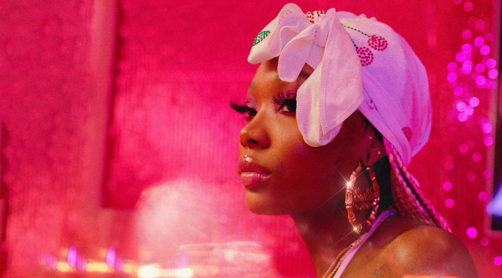
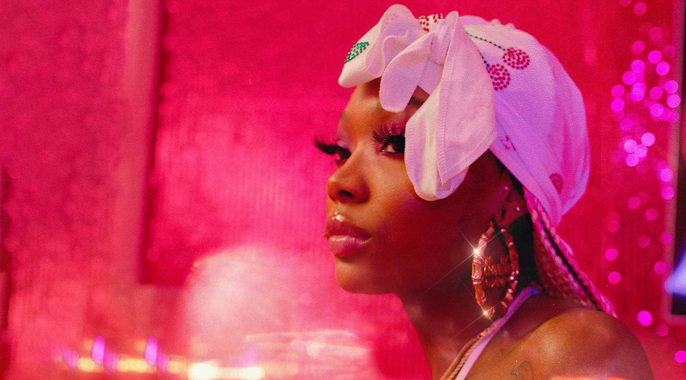
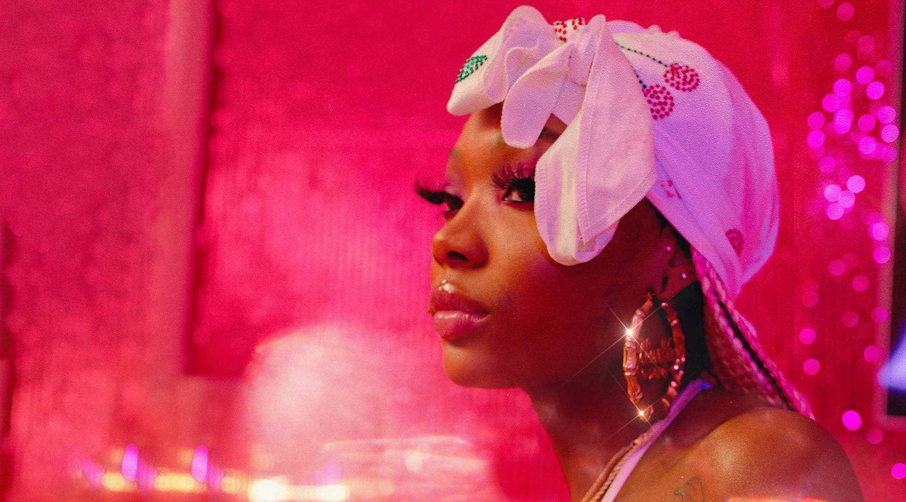

Summmer Walker is iconic for sining about what others are too scared to say, although her life may
be messy at times her music is somthing that will stick around.

Born on April 11, 1996, Walker had to go through some hardship first before she launched her music career. For two years, the singer worked as a cleaner
and a stripper in Atlanta,
Georgia while teaching herself how to play guitar by watching tutorials on YouTube. It all began to change when she was discovered by a woman who works as the
studio manager of a label LVRN in the city.
Thanks to the woman, she was signed into the label and began working on her first commercial mixtape "Last Day of Summer". Making its way out on October 19, 2018, the album
was well received by critics and helped her name become known to other people. The success of the album also helped her be named Apple Music's Up Next artist in 2019 and join forces with Drake for a remix of the album's
lead single "Girls Need Love".

 
